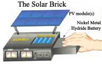
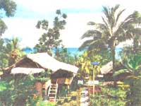
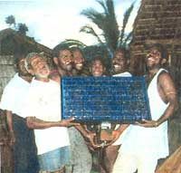
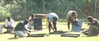
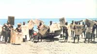
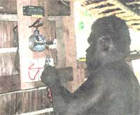
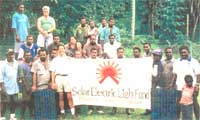
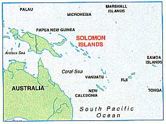

Here's an idea that's been in the back of my mind for a number of years now. I'm getting tired of dreaming about it and wonder if my broadcasting the vision will make it a reality sooner.
I want a silicon on silicon sandwich, a photovoltaic solar cell with an integrated computer chip power controller. Modular, so that I can clip them together and power a house. Or a vehicle. Small enough so that I can carry one in a backpack. Or a pocket. Ontario Hydro now produces something called an En-R-Pak which is a modular, stand-alone PV system with battery and inverter. It's about as big as a picnic cooler and costs nearly $1000. But a picnic cooler strikes me as more than a little unwieldy. I'm thinking small.
It should be solid, hut not too heavy, a chunk in my hand, smaller than a paperback book, and include the PV cell with a clear, unbreakable cover, the power controller, and a battery. The power controller should be built on a chip, and the controls would look like a multitester so that I can monitor amps/volts, AC and DC, input and output. The removable battery would be light, rechargeable, and recyclable. It would have a charge indicator so that I could see how close to empty I am running and a set of connectors to adapt to as many kinds of plugs and sockets as possible.
It would be able to handle all kinds of appliances, automatically adjusting to the solar input and the electrical load. I'd be able to dial up just the optimum amperage and voltage I need for the CD player or any hand power tool. I could plug into any grid system in the world with the power controller and optimize that current for the highest efficiency of the appliance I need to use. I could recharge all my batteries, from dry cell AAAs, to A, B, C, D and 12-volt DC, and put out any variety of AC. A Solar Brick (copyright, trademark, patent applied for) I can fit in my pocket should cost less than twenty bucks. I could use it to power my Walkman or laptop, a flashlight or cellular phone. An emergency household system (see the Feb/Mar issue of MOTHER, #166) might cost a couple supply light and communications during blackouts and brownouts and recharge all the household batteries in between. It is within our current technology, however, to build a smaller, more versatile product, and meet those price points.
Let's just imagine that I get one of these PV systems, the solar Philosopher's Stone, for Christmas. What would happen if then everybody could get one in their stocking? What would the economic effects be if we were all suddenly able to buy a lifetime's supply of electricity through PV solar for, say, $10,000, more or less?
That's 40 years of monthly electrical bills of $20 or so. Put the panels on your roof and say goodbye to the utility, unless you want to sell electricity back to the grid, make a little pocket change, and lower the payback period by a decade or two. Even renters could hang the panels out of south-facing windows and go into business. Homeless people and hikers could use them in the alleys and the mountains. I'd like to have one for Christmas. And a percentage of the gross profits. Please.
-George Mokray
I visited the Solomon Islands for the first time in December, 1994. It was at the initiative of Dr. Hermann Oberli, an orthopedic surgeon from Switzerland who, together with his wife Elisabeth, had traveled to the Solomon Islands to head up the orthopedic section of the central hospital in the capital city of Honiara. As director of the Solar Electric Light Fund (SELF), a Washington, D.C.-based non-profit organization that promotes photovoltaic rural electrification in the developing world, I was thrilled to be associated with the project and had my bags packed in about ten minutes.
Aside from the citizens of Honiara on Guadalcanal, where electricity is supplied by a diesel-powered grid, 90% of the country's population lives in small, isolated villages in which the only source of lighting is that produced by a smoky kerosene lamp.
Dr. Oberli discussed the idea of doing a solar project with one of his younger colleagues, Dr. Silent Tovosia, a native of the Solomon Islands who had received medical training in New Zealand and who was being groomed to eventually head up the orthopedic section of the central hospital. Silent suggested that his childhood village of Sukiki, on the southeast coast of Guadalcanal, would be a good place in which to implement a pilot project.
As a next step, Drs. Oberli and Tovosia then proceeded to register a local NGO, the Guadalcanal Rural Electrification Agency (GREA), to serve as an in-country partner to SELF. In addition, they arranged for the Premier of Guadalcanal Province to send a formal letter to SELF requesting its support for a pilot solar rural electrification project.
So, with an invitation in hand, I journeyed to the Solomon Islands shortly before Christmas in 1994. Dr. Tovosia accompanied me to Sukiki, accessible only by a two-hour outboard canoe ride from the nearest landing strip. I spoke with most of the 50 families who comprise the village and gathered information regarding their average monthly expenditures on kerosene and dry cell batteries. The principle of solar electricity was demonstrated using a PV lantern which I had brought with me. By the time I left Sukiki, there was a consensus among the villagers that they could afford to purchase solar home systems if three-to-four-year financing were made available. Indeed, from that point onwards, the people of Sukiki were anxiously awaiting the day when their homes would be illuminated with solar lighting.
Now came the hard part: raising funds for the project. As a non-profit organization, SELF has relied principally upon grants from private foundations to support its activities in the developing world. Funding has also been provided by the U.S. Department of Energy for several projects. After a prolonged search, support for the project was finally obtained from the Council of State Governments and U.S. Asia Environmental Partnership, whose State Environmental Initiative grant program was designed to facilitate the export of U.S. environmental goods and services to countries in the Asia-Pacific region. Additional support for the project was provided by the Maryland Department of Business and Economic Development and the Maryland Energy Administration.
In April 1997, a total of 50 solar home systems were installed in Sukiki, each consisting of a 40 Wp Solarex PV module and mounting bracket, a Momingstar 6A charge controller, a BP Solar 75 AH lead-acid battery, three 11-watt compact fluorescent lights, and associated wiring and switches. In addition, a 93 Wp PV system was installed in the village church. The systems were designed to provide several hours of lighting and radio each evening. (At present, there is no broadcast television in the Solomons.)
Prior to the installation of solar home systems, SELF carried out a one-week photovoltaic training course, led by Johnny Weiss of Solar Energy International (SEI), in Carbondale, Colorado. Village technicians as well as other students from the College of Higher Education, the Ministry of Energy, Mines & Minerals, and the Solomon Islands Electricity Authority (SEIA) were trained in basic PV design, installation, and maintenance in order to provide ongoing technical support for the project.
The credit scheme set up for the project called for a $50 down payment by the participating families, followed by monthly installments of $15 over four years. Money repaid into the credit fund will be used to provide financing for additional families who wish to purchase solar home systems. In the year since this project was launched, there has been no record of payment default.
Fifty families in Sukiki now enjoy the benefits of electric lighting. Household incomes will rise as productive activities extend into the evening hours. Children will have more time to read and study. No longer will people in the village have to inhale smoky kerosene fumes on a daily basis, nor will they be vulnerable to injuries or deaths that are caused by kerosene-related accidents. At a ceremony to celebrate the launching of the project, the Premier of Guadalcanal Province declared Sukiki to be the first solar-electric village in the Solomon Islands, and expressed hope that this model of solar electrification could be replicated in villages throughout the country.
Indeed, as this article goes to press, another 50 solar home systems are about to be installed in a nearby village on Guadalcanal, thanks to a grant from the United Nations. SELF and GREA are hopeful that these initial efforts will lead to an expanded program of photovoltaic rural electrification in the Solomon Islands.
When I talk to people in the United States about this PV project in the Solomon Islands or in other developing countries in which SELF has worked, the response is often something like, "Hey, that's really cool, but what about here? When will solar energy become viable for folks in this country?"
That is not an easy question to answer, although it is encouraging to learn about the growing number of U.S. families who are harnessing photovoltaic power for their off-grid energy needs. In the meantime, approximately 400,000 families in the developing world have installed solar home systems, and the number keeps growing. And yet, the surface has barely been scratched in terms of PV's potential for improving the quality of rural life in the third world.
As a low-lying archipelago in the South Pacific, the Solomon Islands is faced with the real possibility that a sizable portion of its territory will he submerged underwater in the next 50 to 100 years if global warming causes ocean levels rise according to the projections of climate scientists. It is not surprising, therefore, that the government and the people of the Solomon Islands are delighted with the success of Sukiki and hope that the continued use of photovoltaics for rural electrification will serve as a beacon of hope, not just for the Solomons, but for the rest of the world as well.
-Robert Freling
|
 ILLUSTRATION: RODNEY A. OKYNE Island solar systems going up. |
 PHOTOS: ROBERT FRELING/S.E.L.F Community involvement made all the difference. |
 The systems are low-voltage, so even the wiring could be connected by non-electricians. |
|
 Our intrepid author poses with the citizens of Sukiki. |
 |
 |
|
 |
 |
|